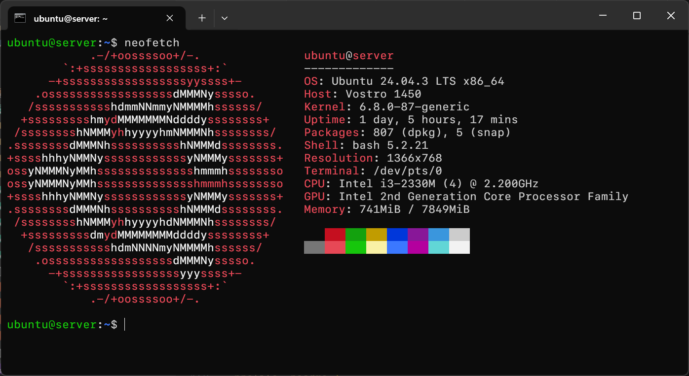
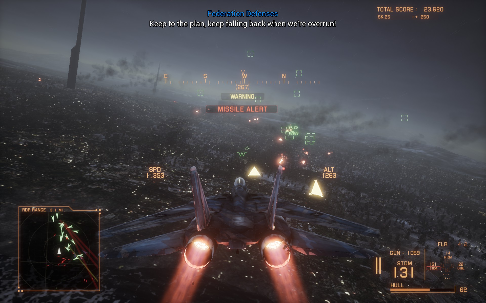
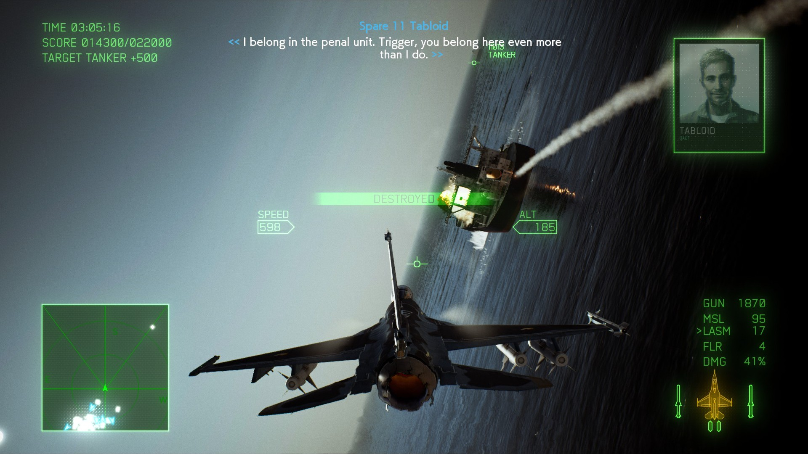
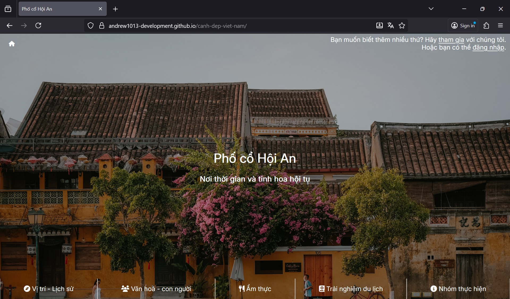

Tran Viet Huy
Andrew1013 · he/him
"I know all Linux users secretly crave to install Windows 11 but I can't quite prove it" - FaceDev
Andrew1013 / README.md
Hi there👋
My name is Huy, currently a freshman at HCMUT as part of the TNE program in partnership with UTS.
I'm currently pursuing a degree in Information Technology, working on side projects, learning about new technologies and participating in the occasional competitions.
Hobbies
- Competitive Programming
- Software Development
- Tinkering with electronics
- Homelabbing (this will be a good read on what "homelabbing" is)
- Gaming
Visit The Gallery of Hobbies for more details.
Technical Skills
- Programming languages: Python, C/C++, C#, Java, JavaScript
- App Development: WinUI 3 (Windows 11), Flutter (cross-platform)
-
Web Development
- Frontend: Bulma, Tailwind
- Backend: Node.js, Django / Flask (Python)
- Microcontrollers: Arduino, ESP32
- Server Administration: Landscape (Ubuntu Server), Azure Arc (Windows Server), Portainer (Docker)
The Gallery of Hobbies
#include <bits/stdc++.h>
#define file_io(f_in,f_out) freopen(f_in,"r",stdin);freopen(f_out,"w",stdout)
#define optimize_io() ios_base::sync_with_stdio(false);cin.tie(NULL)
#define setup_io(prec) cout<<fixed<<setprecision(prec)
#define bit(mask,pos) ((mask>>pos)&1)
#define MOD 1000000007
#define INV_MOD 500000004 // modular inverse of 2
#define endl '\n'
using namespace std;
typedef long long LL;
typedef unsigned long long ULL;
typedef long double LD;
// use modular inverse to do modular division (ok what)
LL CSC_sum(LL start, LL end) {
return (((end - start + 1) % MOD) * ((end + start) % MOD) % MOD) * INV_MOD % MOD;
}
int main() {
LL n,divisor = 1,cnt,last_same,res = 0;
cin >> n;
while (divisor <= n) {
cnt = n / divisor;
last_same = n / cnt;
res += ((cnt % MOD) * (CSC_sum(divisor, last_same) % MOD)) % MOD;
res %= MOD;
divisor = last_same + 1;
}
cout << res;
return 0;
}



URL | GitHub Repository